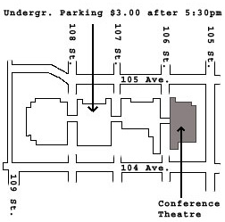

Performance at the Conference Theatre, Grant MacEwan College, May 31, 2002
The following are members from the Edmonton Chinese Philharmonica:

Welcome to the Ruby Tin and students Web Site
A joint concert between Ruby Tin and
students and the Edmonton Chinese Philharmonica
in celebration of the Asia Pacific Month 2002, Edmonton
Performance at the Conference
Theatre, Grant MacEwan College, May 31, 2002 Back
to home page
(Pictures taken by Mang Cheng)
Edmonton Chinese Philharmonica website
Click here to read Chinese News report for the concert
| Roger (Hand drum) and Ruby (GuZheng)
Performance at the Conference Theatre, Grant MacEwan College, May 31, 2002 |
|
| Yen (Left) and Jessica (Right), Grant MacEwan College, May 31, 2002 | |
| Felix (Left) and Michael (Right), Grant MacEwan College, May 31, 2002 | |
| Agnes (Left) and Natasha (Right), Grant MacEwan College, May 31, 2002 | |
|
The following are members from the Edmonton Chinese Philharmonica:
|
|
| Members from the Edmonton Chinese Philharmonica: Alan on the Tung Flute (Left) and Ruby on the GuZheng (Right), Grant MacEwan College, May 31, 2002 | |
|
|
Members from the Edmonton Chinese Philharmonica: Denny on the Pi-Pa, Grant MacEwan College, May 31, 2002 |
| Members from the Edmonton Chinese Philharmonica: Jason Cello solo accompanied by the Philharmonica, Grant MacEwan College, May 31, 2002 | |
| Members from the Edmonton Chinese Philharmonica:The Edmonton Chinese Philharmonica, Grant MacEwan College, May 31, 2002 | |
| The Edmonton Chinese Philharmonica, Grant MacEwan College, May 31, 2002 | |
| Carol, Master of Ceremony, Grant MacEwan College, May 31, 2002 |
|
Ms. Ruby Tin and students Presents A night of Chinese GuZhengMusic
in celebration of the Asian Heritage Month, Edmonton, Alberta, May 2002 Concert date and time : Friday, May 31, 2002
|
 |
|
Program: |
Poster |
| Ms. Ruby Tin and students (GuZheng performances) | |
| The Edmonton Chinese Philharmonica Association (Ensemble) |  |
| May 2001 Grant MacEwan College performance - Ruby Tin | |
| May 1999 Grant MacEwan College performance - Ruby Tin | |
| Ruby Tin's Chinese paintings | |
| Interesting links |
Contact : rubytin@hotmail.com
Website developed by Mang Cheng